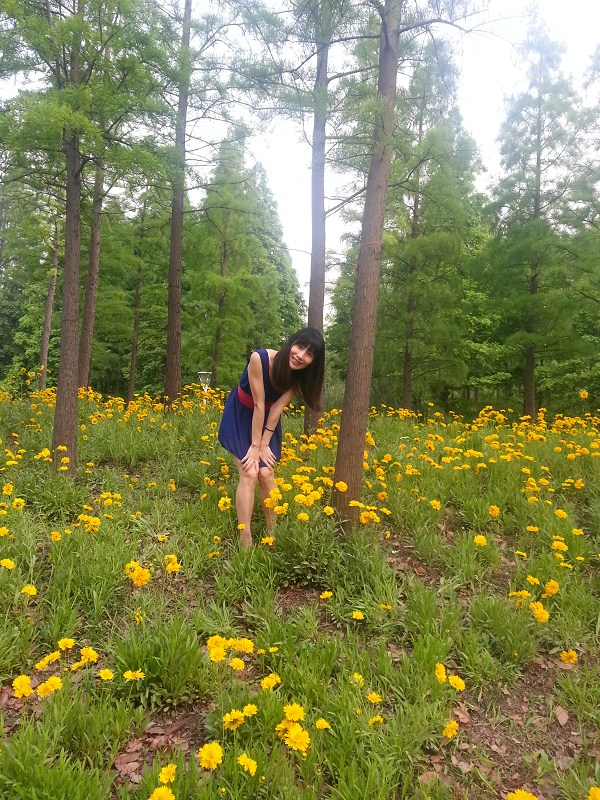

罗玉凤介绍

罗玉凤是重庆綦江赶水镇人，跟牛哥一样，凤姐是她的一种称呼，1985年9月23日出生，在綦江师范学校获得中
罗玉凤
罗玉凤(9张)
师文凭，在重庆教育学院教院获得大专文凭。罗玉凤还透露，7岁时父母离婚。她在离开重庆前曾谈过4次恋爱，但没有具体进展，都不了了之。
凤姐在超市从事服务员
凤姐在超市从事服务员
罗玉凤自称，她曾经在重庆奉节黄泗小学做了两年的老师，学校开始让她教毕业班语文，一学期后，又将她调整到四年级，随后又调整到一年级。
到上海之后，为了找工作，她曾经投出了一万多份简历，从总经理到服务员，几乎各行各业她都试过。罗玉凤认为，从事零售业最适合自己，而她要了解整个零售业的运作状况，就要从基层做起，所以最终她选择在上海一个家乐福超市工作，月收入不过千余元。但走红后，她声称已经离开了该工作单位。
曾在上海地铁站发过成千上万份征婚传单，也曾在电视台情感类节目上公布七大极为苛刻的征婚条件，誓嫁1.76-1.83米的清华或北大硕士生，并且长得要阳光、帅气。因各种雷言囧语层出不穷、开出令人咋舌的高标准征婚条件，罗玉凤一“炮”而红，引起各路媒体和广大网民的关注，被网友戏称为“宇宙无敌超级第一自信”。罗玉凤自嘲称：“青春就是拿来挥霍的，我现在正在挥霍青春”。[1]
报名“花儿朵朵”沈阳唱区顺利拿到资格卡。2010年拿到美国签证。罗玉凤自命不凡，表面放荡不羁，其实是一个内心痛苦挣扎的人，网络上的人都把凤姐的照片摆上来辟邪。
2008年，罗玉凤只身来到上海。她说，按她的计划，工作稳定之后，就有
罗玉凤
罗玉凤(9张)
了结婚的打算。但身边没有符合要求的人，所以决定征婚。从2009年10月下旬开始，她就在上海陆家嘴附近发征婚传单。传单上应征者必须满足的条件共有7条，除了“必须是经济学专业或精通经济学”等以外，西南地区，重庆等地都不考虑。
罗玉凤说，她之所以要求长相、身高等，是因为她认为“智商是不可能超过我了，只能用长相和身高去弥补，这样才配得上我”。最重要的是她要求对方一定要聪明，“和北大清华齐名的重点院校我也考虑”。要求经济学毕业，是因为她认为经济学是最先进的学科，并且在节目上用她的偶像举例：陈坤、刘德华，即便他们是她心目中的白马王子，但罗玉凤表示自己仅根据外貌喜欢这两位男明星，但当主持人问她是否会嫁给他们时，罗玉凤表示他们并不符合她的择偶条件。
此事经网络曝光后，引起了很多人的兴趣。罗玉凤说：“每天都有打电话、发短信求证，或者是应征。”但她觉得满意的却寥寥无几，“到目前（2010年1月）为止只有2个，都还不是特别满意”。
后来就在新浪微博上出了名，有了名气。在腾讯也有微博帐号，位居草根明星排行榜第二。
征婚标准
本人找伴侣。一不求帅。二不求富。三不求傻。但求同甘苦，共患难。
凤姐写真
凤姐写真(19张)
本人对伴侣要求如下：
第一，必须为伦敦或哈佛大学硕士毕业生。必须博士生连读，中途无跳级，不留级，不转校。在外参加工作后再回校读书者免。
第二，必须为经济学、泡妞学专业毕业。非经济学专业毕业则必须精通经济学。或对经济学有浓厚的兴趣。
第三，必须具备国际视野，但是无长期定居国外甚至移民的打算。
第四，身高176--183左右。长得越帅越好。必须有刘德华那样的帅气、任达华那样的性感、立威廉那样的俊俏、谢霆锋那样的冷酷、滴呐以及韩寒那样的才气。
凤姐图片
凤姐图片(17张)
凤姐海报
凤姐海报(14张)
第五，无生育史。过往所有女友均无因自身而致的堕胎史。
第六，东部户籍，即江、浙、沪三地户籍或广东、天津、山东、福建、北京、东北三省和内蒙古等地户籍。西南地区即四川、重庆、贵州、云南、西藏和湖南、青海等地籍贯者不予考虑。
第七，年龄25--28岁左右。即06届，07届，08届，09届毕业生。有一至两年的工作经验，06级毕业生需年龄在28岁左右，09级毕业生则需聪明过人。且具备丰富的社会实践经验。就职于国家机关，国有企事业单位者不予考虑。但就职于中石油，中石化等世界顶尖型企业或银行者又比较喜欢。
本人85年阴历8月初9日生。阳历生日为9月23日。身高146cm。平时穿高跟鞋153cm。体重40kg。现就读于綦江师范学校获中师文凭。
后连读重庆教育学院获汉语言文学专业大专文凭。懂诗画，唱歌，弹琴等。自称最擅长诗歌与散文。精通古汉语，博览群书。无堕胎史，无生育史。交过几个男朋友，都不了了之。具体进展却无。主要要求男方身家清白，聪慧过人。
3凤姐整容
编辑
一次整容
凤姐整容
凤姐整容
2010年3月30日下午14时，罗玉凤来到某医院美容中心。中心主任谭新东在此间介绍，凤姐3月中旬来医院要求整容，明确提出只整面部，于是医生们做手术力求“保持她自信的特点，在外貌上更符合审美要求。”
英气逼人
凤姐与医生交谈
凤姐与医生交谈
暗红的厚嘴唇，超长的假睫毛，微卷的长发以及招牌式的自信笑容，整容后的凤姐与网上流传的照片看起来确实有点不同。凤姐的主治医生王文俊透露说，凤姐此次主要是对嘴部、脸型、眼眉骨和下颔处进行了修饰。
问：“你一直认为自己很完美了，为什么还要整容呢?”记者发问。
回答: “我觉得我原来的底子就很好。你看我的身材已经很完美了，但是我认为我的脸显得太英气逼人。如果在古代，我就是花木兰那样的奇女子。可是在现代，我想让自己更加有女人味。”
择偶改变
“现在国内符合我原先条件的基本上都已经被我淘汰了，所以我现在想要找欧洲的、北美的海归，像意大利啊、美国啊、澳大利亚啊。”凤姐表示，有意和她结合的男性非常多，既有清华北大的高才生，也有普林斯顿、哈佛的学生。“像之前浙江有一个开珠宝连锁公司的，哈佛毕业的，资产两亿元，但我最后还是推掉了。”凤姐说。
对于被策划的揣测，凤姐毫不避讳：“那个孙先生(自称策划者)在我上江苏卫视前后一个月是有联系过我，但是后来我们起了争执，我就把他一脚踢了。”对于家人希望其“不要再折腾和丢人”的表态，凤姐显得有点尴尬:“呃，我妈妈是希望我踏踏实实一点，嫁个好点的老公过日子就行了。”她认为自己也是在踏踏实实，只要找到合意的对象就会很快结婚。
二次整容
2010年4月18日，罗玉凤再次出现在该医院的门口。罗玉凤表示：“再过个两三年，我肯定能成为奥巴马的情人！”并要求医生：“尽量要把我整成范冰冰的样子，对了，还有我的嘴，我想它变成舒淇的嘴唇！”
凤姐说：“我的五官比较平，脸太圆了，眼睛也小了点，嘴略大了点，唇形不怎么好看，皮肤黑了点，把这些做好就可以了！”其后，她说了一段让人面面相觑的话，“知道吗？按照柏拉图的审美标准，人分五等，第一等就是拿放大镜都看不出瑕疵的，我要力争做到一等人，第二等是远看也行，近看也行，当然还是会有瑕疵的，好比范冰冰、大S她们。当然我如果做不到一等，也一定要做到二等。”
4家人态度
编辑
罗玉凤的母亲王云（化名）有三个孩子，老大罗玉凤和二儿子是她与前夫所生。但“她前夫没有一点责任心，与王云生了两个孩子后，又搞上了一个女的”。
王云说，玉凤主要是觉得那个地方太偏僻了，所以才决定离开的。黄泗小学一高姓老师说罗玉凤和老师们关系搞不好，和学生的关系也处不来。开始教六年级，可教了几天后大家发觉不行，将她调到教三年级，后又调到教一年级。她想和该校一个男教师谈恋爱，但人家看不上她。“在事业和爱情都不如意的情况下，她被迫离开了学校。”
王云说，自己对女儿的“这个事情”实在不理解，“她之前没有受过啥刺激，咋就变成这样了呢？”王云一方面担心女儿，另一方面又觉得丢人现眼。
1．以我的智商和以我的能力的话，往前推三百年，往后推三百年，总共六百年之内不会有第二个人超过
凤姐相片杂锦
凤姐相片杂锦(12张)
我。
2．因为我老了。所以决定把每年我的生日作为国际爱老日
3．必须具备国际视野，有征服世界的欲望。奥巴马才符合我的征婚标准。（谈择偶）
4．本人找伴侣，一不求帅，二不求富。
5．9岁博览群书，20岁到达顶峰，往前300年往后推300年，没有人会超过我。在智力上他们是不可能比我强的，那就在身高和外貌上弥补吧……
6．他太老了，而且身高也不够。他也不可能是北大清华，更不可能是经济学专业，我不会选他（陈坤）。
7．这个标准不高，这个标准很低。
8．看到其他女的就他妈花痴一样。（疯了，上电视说脏话）
9．过了三十岁自己滚蛋。
10．男人过了三十岁就没看点了，就人老珠黄了。
11．你给我十万。
12．吾日三省吾身（凤姐念错字了，省应该读 xǐng，她读shěng)。
13．我用的是A4纸，因为A4是非常标准的纸。
14．因为上海是一个经济中心，我这个人对征服经济世界蛮有兴趣的。
15．我经常看的都是人文社会的书，例如《知音》、《故事会》。
16．我一般按长相将人分五等。我是第三等。（主持人指着她前男朋友问：他是几等）他啊，没有等（捂嘴笑）.
17．我在家乐福超市工作，世界500强。
18．世界上有一半的男人看到我就想逃跑，另一半我看到他就想逃跑。
凤姐相片精选
凤姐相片精选(12张)
19．我这个人有点洁癖，以前读书时衣服每天要洗，基本上穿过两三天就洗一次，洗头也这样，很多时间都浪费在这上面。
20．罗指着台下众人说：你们这些普通院校的，如果撇开这上面的七条，你们肯定有人会愿意娶我……
21．真的美女真多啊。我对面的一位男孩，开始很仔细的打量我，我想我应该还没有出名到他已经看过我的视频吧。有次有人对我说你上电视了，我说什么电视？人家说东方卫视啊。我打开电视，东方卫视正在播奥巴马的新闻。我觉得我和奥巴马之间还有很大的距离。做人，自知之明还是有的。
22．你看看你的身高你的长相，我觉得你配不上我，我们之间差距太大了，带回家的话，我家里的人肯定会嘲笑我的，他们会说，罗玉凤，你找的男朋友怎么这么丢脸啊，连话都不会讲，我觉得我们还是算了吧，我一定能够找到一个比你好的多的男朋友。
23．像我这样的一个人，独自在外面闯荡。很引人注目，可是自己想想。论交际，论人际关系，论工作能力。实在是不但女人，就是男人，也很难和我相比。论健康状况，却是一天不如一天的。我想我不能再这么下去了。
24．我最喜欢的诗人是顾城顾城（强调） 你知道吧？（顾城是中国现代著名爱国诗人）。
25．要说我写诗的风格嘛，比较像顾城，写文章嘛，人家都说我像鲁迅。
26．河南走出去的我可以考虑一下，还在河南工作的不予考虑。
27．凤姐：爱因斯坦宏观上不如我。
主持人：你指的宏观是？
凤姐：把全人类更上一层吧。
个人照
个人照(20张)
28．我弟弟长得很阳光帅气。
你弟弟长得和你很像？
对，很像。
29．我在上海的时候，一直会有人在我肩膀上摸一摸什么的，有目的性的揩我油。
30．（与主持人对话）
主持人： —如果说他（指陈坤，凤姐的偶像之一）向你求婚了，跪在你面前了，玉凤你嫁给我吧，你会同意吗？
罗玉凤：—我不会同意的。首先他年龄三十三了，我觉得这个太老了
哦。然后他身高可能应该也不足，然后他不是北大清华的，他根本就不可能是经济学专业的。
31．中国人民银行、花旗银行、渣打银行、汇丰银行、交通银行、中国人寿等金融公司驻中国区首席执行官向我表达爱意，愿意与我结婚，而本人觉得他们年老色衰，所以不愿意。
32．我的七大要求全国还能找到100个我认为不高，全国找到1个是还差一点，全国一个都找不出我认为是刚好。
33．征婚者：“你从哪里来？” 罗玉凤：“我从地球来。” 征婚者：“好巧我也是。”
34．我爱干净，比较洁癖，男朋友看到女的别他妈花痴样。
35．主持人：你觉得爱因斯坦也不及你聪明么？
罗玉凤：不及我不及我，差远了，他是一名科学家。
主持人：对，他是一名科学家，但是你知道他所知道的东西么？
罗玉凤：我不知道他知道的东西，我不能发明电灯。(电灯的发明者是爱迪生。）
36．罗玉凤在谈自己最喜欢的一首诗，是凤姐自己写的：天还没有黑，天已经黑了。
37．我平常接触的朋友多，因为我交际面广嘛。
38．凭我的智慧，我的相貌，我完全可以找一个比他（指前男友）更优秀的男朋友。
39．你去死。
40．很多人都说我漂亮。我也知道我漂亮。
41．我喜欢蓝莓的味道。蓝莓是一种优雅的水果，即使我毫无姿态地坐在路边的水泥地，拣起没有洗过的蓝莓塞进嘴里，我依然认为我是优雅的，因为优雅的蓝莓。
42．男人就是用来挑的。
43．我从来不会做梦，已经过了做梦的年龄。
44．做人应该谦虚嘛！反正，年轻人都很崇拜我，我是他们的偶像。
45．我是一个事业心很强的人，肯定先以事业为重。
46．姐长得丑，但是有气质。
47．朋友，我认为你的英语还有欠缺！some 后面的 man应该是复数形式！应该是 some mans（man正确的复数形式应该是men)。
48．我博览群书，但在外貌上还有一点瑕疵。
49．我想让自己更完美，我是一个对自己要求很高的女人。
50．有很多的爱慕者，我觉得我变得更完美，也是在对爱慕者和我的粉丝们负责。
51．也是有名气的人了，不能随便找家医院。
52．我脱胎换骨了，我也会像那些大明星一样越来越红。
53．我的身材已经非常完美了，没必要在身体部位上做文章。
54．我对自己唯一不满的就是脸部英气逼人，如果在古代，那我就是花木兰那样的奇女子。可是在现代，我的长处没有用武之地，所以我想让自己的女人味稍微增加一点点。这次只是动了脸上个别小地方，我原来的底子很好，所以不用过多修饰。
55．医生们只是在我原先的底子上做了小小的修补，让我的个人魅力能够更加发挥出来。我觉得这个做法非常好。再说了，还有那么多人迷恋我原来的样子，我要照顾大家的感受。不过我觉得，变得更漂亮了，我的粉丝们会支持我的。
56．我想重新征婚。以前我自身的条件无人能超越，我更是举世无双了。
57．征婚的话，一律要海归人士，而且只要欧洲和北美的海归。哈佛牛津毕业的优先。
58．想和我谈的人很多，有几个还不错，但我觉得以我的条件，他们又不符合我的要求了。
59．我觉得鲁迅的文章可读性和丰富性都比我差一些。三百年之后，我的文章还会被人传阅，而鲁迅的不会。
60．可能有人见了我会反胃吧，其实我长得挺环保的，我为我们国家节约了好多粮食，国家财政部、国家国防部应该为我颁发一个奖牌，是全国十佳青年奖。罗玉凤
61．全国十佳青年奖很少颁发，特别是颁发给我这样的大明星。以前我就知道这个奖（十佳青年奖）给袁隆平颁过。（袁隆平院士因为其超级杂交水稻获得的是第一次中国最高科学技术奖。）
62．北大清华经济学教授的水平也不如我，我找北大清华经济学硕士当男友，是因为我相信青 出于 蓝而胜于蓝。
63．我找男朋友是因为我也寂寞，不高调我找不着男朋友。
64．我觉得我能做家乐福中国区总裁，或者当个中央领导。
65．我没有性经历，没有堕过胎，没有生育史。
66．地球上找不着合适的男朋友，我就单身。
67.择偶七大标准，实际上是在营销我自己。
68．有一天我要领导世界。
69．想让全天下的女人都通过整容像我一样自信。
70．曾经谈过4次恋爱，最伤心的是被一个有8岁孩子的男人骗了。
71．家乐福中国区总裁非常喜欢我，说我是一个好员工，兢兢业业很刻苦，准备向我求婚，我会考虑一下。
72．你们河南这么小的城市也能办信用卡？（河南是中国的省级行政单位。）
73．各位同学，你们说我好话你就 是帅哥美女，你们说我坏话就不是帅哥美女了。
74．今天买了一件史上最便宜裙子。才五十块钱哈。不过穿在身上特别漂亮。我准备穿它上节目。但太便宜的衣服再漂亮，上镜都成垃圾了。我每天都很开心哈。
75．梅西很年轻，很有塑造力，这些都很符合我的征婚标准。不过他太矮了，所以我只能把他pass掉了。
76．其实我写真共四套，第一套为避孕套，第二套为玫瑰花。第三套为沙滩美，第四套为隐私秀
77．我说过了不准骂我，因为骂我就表示喜欢我，就要和我上床